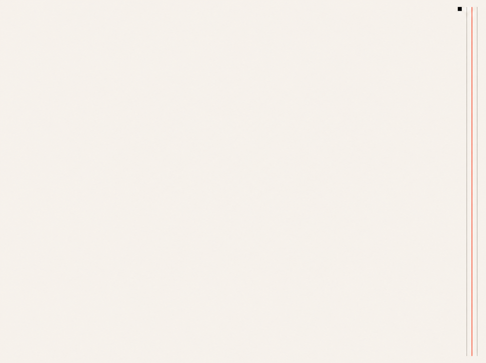

PP.MEDIA · И_И_ · выпуск 16
От Ильи
до канала
через четыре
фильтра
.
PIPELINE · ОТ DRIVE ИЛЬИ ДО КАНАЛА
ИЛЬЯ
drive · raw-packs
WATCHER
3×/день · digest
УЗЕЛ
ЛИЛИ · 4 ФИЛЬТРА
НАТАЛЬЯ
правки · публикация
КАНАЛ
TG · И_И_ · mooove
WATCHER · АВТОМАТ
launchd · 3×/день
Что делает между Ильёй и Лили:
опрашивает папку Ильи в Drive PP
скачивает дельту в drive_pull/
запускает headless Claude
обновляет дайджест в ilya_digest.md
ЛИЛИ · УЗЕЛ ФИЛЬТРАЦИИ
Что делает между Watcher и Натальей:
читает дайджест и кандидатов 🟢/🟡
прогоняет тему через 4 фильтра
сжимает в плотный формат поста-14
собирает визуал в палитре канала
ЧЕТЫРЕ ФИЛЬТРА ВНУТРИ УЗЛА ЛИЛИ
01
РАМКА
PP 2026–2029
6 маршрутов
объект управления
запрещённые слова
whitespaces
02
ПРИНЦИПЫ
Ильи · 13 правил
связь с витриной
база-не-тема
антизацикливание
50/50 rail refresh
03
АНТИ-AI
24 паттерна
не X а Y
одушевления
точка-X · параллелизм
англицизмы
04
ГОЛОС
Voice Profile
регистр PP
или Балахнин личный
язык собственника
без агентских клише
05
ОТДАТЬ
НАТАЛЬЕ
только чистый
финальный текст;
никакого
полуготового
!
Итог
Watcher собирает Drive Ильи в дайджест.
Лили прогоняет тему через четыре фильтра. Полуготовое до Натальи не доходит.